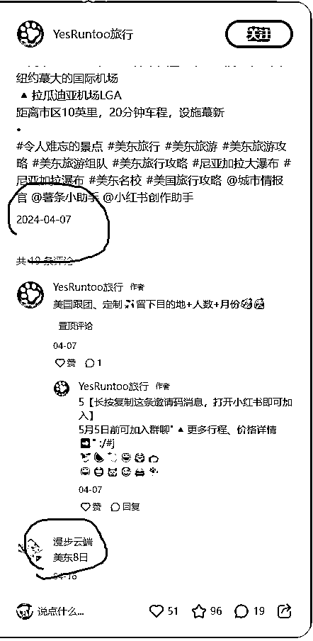

来源：https://ht16ej1tui.feishu.cn/docx/EVg1dGiUxo0yduxdv3DccQu0nje
旅游（尤其是国外旅游），在2024年，是一个天坑赛道。
能和这个赛道肩并肩的，只有留学行业了。
【注：国内旅游和国外旅游以后会变成两个不一样的走向。】
Hi，你好，我是在小红书留学两年做了2700万，又转去房产赛道两个月卖出1个小目标房子的珍妮子，和我和合伙人陈铭Ivy一块靠1500元起家，这是我们创业的第三年，侥幸逃过“创业公司一般三年倒闭”的魔咒。
之所以能转行这么快，是因为，我懂运营的底层逻辑。
任何赛道，只要我看到他的产品，我就能猜出他的目标群，知道目标客户的年龄、喜好、职业等等，我再稍微深扒，我就能搜集到他们的痛点，从而调整产品的卖点，去宣传。
曾经有做海外旅游赛道的老板，来问我：ta的笔记要怎么改？
我给ta改完后，ta的引流成本下降了，开口价从45降到了13.16，每天一堆人来咨询，如下图：
以上只是为了展示：
运营的底层逻辑是互通的，我的经验，对旅游赛道从业者也有帮助。
以下是本文目录，感兴趣的老板们可戳戳：
1.旅游赛道的用户画像
1.1家庭游主流消费者及消费习惯
1.2闺蜜游主流消费者及消费习惯
1.3单人游主流消费者及消费习惯
1.4主流消费者现在的消费能力
2.旅游赛道现有的「卷王程度、笔记优缺点分析」
以新西兰旅游、美国旅游为例，共分析三组笔记，合计13篇
3.旅游赛道总结
4.旅游从业者「转行要避开的雷区」
这是我们以前写过的文章，感兴趣的老板可戳戳：
https://t.zsxq.com/DT1SJ
https://t.zsxq.com/aPL7f
https://t.zsxq.com/XXl6X
https://t.zsxq.com/Fvvr8
https://t.zsxq.com/LhyXR
https://t.zsxq.com/2Wg9U
https://t.zsxq.com/49u9r
https://t.zsxq.com/r7CMz
https://t.zsxq.com/k8Nsa
https://t.zsxq.com/SOgPV
https://t.zsxq.com/RB6mX
以下是珍妮个人观点：
旅游和留学这两个赛道虽然还有钱赚，但是利润会越来越微薄，曾经像大风一样刮过来的钱，越来越少。
如果你只懂引流或者销售，没有修改背后产业链、调整产品的能力，且能接受利润微薄，你可以继续做。
如果不能接受，转行吧。
我曾在24年3月1日开始分析了40+高客单赛道。旅游，是我分析的其中一个赛道。我通过分析这些卷王天花板赛道，找到了降维打击房产赛道的方法，所以才快速跑通了卖房单边代理项目。
（房产项目在我们跑通之前，全小红书没人靠写卖房代理业务写出过爆款图文笔记，所以我们进场那会在小红书找不到对标。）
以下是我对上方内容的再次梳理。
本用户画像分析主要解决两个问题：
问题1：究竟谁才是旅游赛道的金主爸爸？
问题2：谁喜欢旅游赛道，但不爱花钱，还特别能砍价？
这个赛道的家庭游，有两类主流消费者，我们简称为A家庭和B家庭。
为减轻理解难度，等到本文结尾，我再来说A家庭和B家庭所代表的意思。
此处为A类家庭和B类家庭的「消费者行为」思维导图，如果觉得下段文字看起来比较费劲，可以看思维导图哦。
A家庭，平时一般不出去旅游，一旦旅游，就是家庭游，要么是带爸妈出去旅游，要么是带孩子出去旅游。如果这类家庭的丈夫和妻子单独去旅游，可能性特别小，他们会宁愿待在家里。
他们旅游的目的很简单：
1）给父母敬敬孝心
2）带孩子见见世面
他们要么定制游，给父母和孩子美好的体验，要么报个跟团游，让父母退休后去玩玩。
这类家庭，丈夫有部分钱（不是全部）是交给妻子管着，如果妻子乱花钱，丈夫就会收回财产管理大权。
女主人负责安排一家人的出行，她虽然不怎么砍价比价，但是她本身就不是乱花钱的性子，一开始就不会被格外昂贵的东西吸引，因为女主人能一眼看破“哪些东西都是溢价，哪些是虚的。”
这类家庭出游，看重的是质量，比如车子是否宽敞，行程是否能考虑到老人和小孩的感受，不要太赶，酒店卫生是否干净，隔音是否ok，是否能保证老人有个安稳的睡眠。
这类家庭没有那么注重“是否有全程跟拍服务”。他们一旦出游，旅行社给他们拍全家福就好了。
他们也不太喜欢去各种新奇的景点旅游，往往去的都是比较传统的景点，比如带父母去北京旅游，给父母在天安门脚下拍张合照。
但他们很少会：带父母去新疆西藏旅游。
就算旅行社告诉他们「不用担心高原反应」，他们去新疆西藏旅游的可能性也低于10%。
因为这类家庭特别惜命，不喜欢冒险活动，丈夫和妻子都不怎么喜欢参与“潜水、蹦极、徒步”等活动。
如果有商家打着超高端定制的模式，去试图让A家庭溢价很多来付费，很难。
B家庭，特别爱旅游，丈夫和妻子基本都有一个环游世界的梦想，他们喜欢去各种新奇的景点。
北京这类传统景点，反而没那么吸引他们。
如果在国内，他们就喜欢去川西、新疆、内蒙、云南、东北等地旅游，
他们特别喜欢去国外旅游。
这类家庭又分为两小类，我们简称B1家庭和B2家庭。
B1家庭：女强男弱，妻子又美又飒，丈夫是耙耳朵（怕老婆）。
妻子（此处以“妻子甲”代替，因为后面会反复提及）很爱拍照，针对他们的高端定制游，一定要提出“送精修服务，底片全送，全程跟拍”。
这类家庭的丈夫（以“丈夫甲”代替）都盼着旅行社推出全程跟拍送精修的服务，这样自己旅游时可以解放双手，而不是一直帮忙拍照。
这类家庭，擅长砍价比价。
B2家庭：丈夫看上去很有钱/甚至可能还很帅，结果还很会提供情绪价值，能做到跪捧女方。妻子看起来老老实实。
这类家庭，如果出来旅游，一般都是在恋爱或者新婚浓度最高的时候出来旅游。这时候往往是丈夫（此处以“丈夫乙”代替）掏钱，丈夫不怎么砍价。但如果是妻子（此处以“妻子乙”代替）过来咨询旅游业务，就可能砍价比价。
妻子甲和妻子乙往往也是闺蜜。
又或者妻子甲身边，都是和妻子甲一样的女性，都热爱拍照。【要针对她们推出跟拍服务】
妻子甲和妻子乙两类人都特别爱好旅游。
一旦她们变成闺蜜团出门旅游，女人们聚到一块，一定会比价，买最划算的团。
丈夫甲单独出门旅游，热爱DIY，一边DIY定制旅游线路，一边上传自己的Vlog，他们极具摄影天赋，往往会把自己变成旅行博主（注意了，他们更喜欢用“旅行”而不是“旅游”这个词）。
他们是旅游赛道背后设计路线的人，比导游还导游，
想通过旅游行业的跟团游或者定制游赚到他们的钱，真的难上加难。因为我们不可能赚到“导游”的钱。
丈夫乙也会单独出门旅游，他们花钱可能会有些大手大脚，我们可以赚到丈夫乙的钱。
妻子甲也会单独出门旅游，如果是DIY旅游，她们可能自己DIY，或者在未婚时让身边的追求者帮自己DIY攻略。她们没有那么喜欢一个人出门报跟团游或者高端定制游。
妻子乙也会单独出门旅游，她们会自己DIY，也很少报跟团游或高端定制游。
A类家庭，家庭富裕，就算经济下行，他们也“瘦死的骆驼比马大”，他们依旧富裕。
B类家庭，平时可能铺张浪费，或者因为太想赚钱，反而被人割韭菜。叠加他们又往往在：
「金融、跨境电商、KTV、咖啡、轻食、留学、英语培训、奢侈品、电影院、旅游、宠物」等下行赛道，
现在他们要么被降薪，要么被裁员，要么被迫转行。所以他们的消费能力越来越弱。
这类赛道最能花钱的客户主要有两类（A类家庭和B类家庭）：
A类家庭，给父母和孩子花钱，自己反而不怎么出门旅游。
B类家庭，擅长砍价比价。结果B类家庭收入下滑，客户群没啥钱了，所以如果只赚B类家庭的钱，我们很难有高利润。
旅游赛道的卷王程度，和留学赛道有得一比。
我以这个图为例，圈里有老板告诉我：
下面这个图，从24年年初开始就频繁出现了。
所以我是以这个图为标准，去判断各个赛道的卷度。
然后发现，哪怕是这个图，美国日本赛道也卷出了N个变体，其次是“芬兰、法国、意大利、瑞士”。
我们先来分析：
为什么都是这个「圆圈套圆圈的图」，可是有些笔记数据好，有些笔记数据差。
注：下文最早写于24年4月和6月，当时找的对标笔记都是近三个月的爆款，但依旧对现在的旅游行业有帮助。
以新西兰旅游为例，
我会分析4篇文章，包括：
数据差的笔记（2篇），数据一般（1篇），数据好（1篇）
https://www.xiaohongshu.com/explore/661bd4b1000000001a0103e5?app_platform=ios&app_version=8.38&share_from_user_hidden=true&type=normal&author_share=1&xhsshare=WeixinSession&shareRedId=ODlHOEdLOEI2NzUyOTgwNjg6OTlGNj1C&apptime=1717683525
https://www.xiaohongshu.com/explore/6603f3d100000000120376b9?app_platform=ios&app_version=8.38&share_from_user_hidden=true&type=normal&author_share=1&xhsshare=WeixinSession&shareRedId=ODlHOEdLOEI2NzUyOTgwNjg6OTlGNj1C&apptime=1717683609&wechatWid=57928cc59c2d3e4b89d5fa01edf13838&wechatOrigin=menu
https://www.xiaohongshu.com/explore/6623920f000000001c00870a?app_platform=ios&app_version=8.38&share_from_user_hidden=true&type=normal&author_share=1&xhsshare=WeixinSession&shareRedId=ODlHOEdLOEI2NzUyOTgwNjg6OTlGNj1C&apptime=1717683603&wechatWid=57928cc59c2d3e4b89d5fa01edf13838&wechatOrigin=menu

https://www.xiaohongshu.com/explore/65bcccc200000000020100e5?app_platform=ios&app_version=8.38&share_from_user_hidden=true&type=normal&author_share=1&xhsshare=WeixinSession&shareRedId=ODlHOEdLOEI2NzUyOTgwNjg6OTlGNj1C&apptime=1717683541
数据好的那篇是2月3号发布（发布最早）
数据一般的是4月20号发布（发布偏晚）
数据差的号是3月27和4月14发布（发布偏晚）
可以发现：
虽然在发布时间上，早些发布的更容易成为爆款，但不是影响「笔记能不能成为爆款的绝对性因素」。
数据好的：
终于有人把新西兰旅游一次性讲明白了‼️‼️
数据一般的：
终于有人把新西兰旅游一次性讲明白了‼️
数据差的：
⭕️新西兰旅游，去了8次以后熬夜总结😭
终于有人把新西兰旅游一次性讲明白了！！！
可以发现：文字标题不是决定他们数据好坏的因素
不分析，因为这四张图的封面都差不多，连标题也差不多
| 数据差 | 数据差 | 数据一般 | 数据好 |
|---|---|---|---|
| 新西兰一年四季都很美，很值得去旅游🥰 👉熬夜用心整理的新西兰攻略，打算去新西兰的姐妹们一定要看看❗希望姐妹们玩的开心~ 🙋南北岛怎么选❓ 南岛 南岛就像是大自然的调色盘，到处都是让人惊叹的山水风光和野生动物，适合喜欢户外探险和自然美景的旅行者。 北岛 活火山、岛屿保护区以及毛利文化等是北岛的主题。一路穿越由壮观海洋、广阔农田以及地热奇观组成的山川景色，适合喜欢文化探索和休闲度假的旅行爱好者。 📷库克山的7个推荐拍照点位： 塔斯曼河观景台（日出） 库克山之路 胡克谷步道（日出或日落） 穆勒小屋步道（需要徒步5-6小时） 西利塔恩斯步道（登顶需要2小时） 乘坐直升机穿越库克山，俯瞰西海岸分水岭； 塔斯曼湖附近的蓝湖 🎁伴手礼： 羊胎素 羊毛制品 精油 护肤产品 毛利人手工艺品 奶粉🍼 麦卢卡蜂蜜 红酒🍷 | 如果一生必去一个地方，我的推荐是新西兰🍃 这座南太平洋的小岛，被誉为世界上最后一片净土🏝️它不仅风景迷人，让人流连忘返，更因其特有的松弛氛围治愈了无数人😊 . 但是！作为去了几次的过来人提醒大家😭去新西兰一定得提前做准备！！不然还是会狠狠踩坑！超全保姆级攻略给大家，建议收藏🔥 🧾攻略详情 🔺国家概况 🔺签证 🔺交通 🔺行前须知 🔺入境须知 🔺旅行时间表 🔺实用APP 🔺精华景点 🔺必玩体验 ✨路线推荐 第一次去新西兰的宝子，推荐走经典的南岛八日游路线，能快速游玩大部分精华景点。 🚩Day1 抵达基督城—霍基蒂卡 『旅程开启』 🚩 Day2 霍基蒂卡—冰川地区 『萤火虫＋冰川健行』 🚩 Day3 冰川地区—瓦纳卡—皇后镇 『孤独的树＋箭镇秋色』 🚩 Day4 皇后镇 『绝美风景＋极限运动』 🚩 Day5 皇后镇—旦尼丁『 隧道海滩＋奥塔哥半岛』 🚩 Day6 旦尼丁—奥马鲁 『莫拉基大圆石＋小蓝企鹅归巢』 🚩 Day7奥马鲁—库克山—蒂卡波『 肉眼观星＋绝美银河』 🚩 Day8 蒂卡波—基督城『citywalk买买买＋返程』 . ⚠️旅游注意事项 ❶新西兰法律规定18周岁以上的成年人才可以购买酒精饮料，买酒记得带好护照 ❷新西兰的室内和户外公共场所基本上都是禁烟的 ❸不要喂食野生鸟类，尊重自然，让鸟类们健康生长 ❹交通方面，行人车辆都是靠左走 ❺新西兰基本没有小费习惯 ❻在新西兰不要当众嚼口香糖或使用牙签，是不文明的行为 ❼新西兰是移民多元国家，宗教多元化，不要随便评价别人的信仰 ❽不要在皇后镇买太多东西，同样的东西奥克兰会便宜很多 ❾给他人拍照时要得到他人同意，特别是毛利族 ❿新西兰实行垃圾分类，丢弃垃圾的时候记得遵守当地规定 | 嗨！来自仙境般🌈的新西兰，如诗如画的景色令人陶醉💖。无论是草原、雪山还是原始森林🍀，每一步都是一幅动人的画卷 | ▪️在这个世界上，总有那么一些地方，它们的存在仿佛是大自然最后的秘境，保留着原始的美丽与纯粹📍新西兰不仅仅是一个地理名词，更是一种对旷野、自由与纯粹之美的追求 - 💁🏼♀️各位计划春节来新西兰旅游的公主们，一定要提前做好旅游攻略‼️新西兰会惩罚每一个不做攻略的人儿！ - 🇳🇿新西兰旅游避坑建议‼️ ❌不要去皇后镇商业街买东西，性价比真的不高！✅同样的东西在基督城或者但尼丁这些地方就会便宜很多 ❌在新西兰当众吃口香糖会被认为是不礼貌的表现 ✅喜欢看星空的可以在蒂卡波跟一个观星团，一趟下来可以学习到不少的星空知识 ‼️入境新西兰如果带了水果食品动植物这些一定记得申报 ✅你看过地下的银河吗？如果没有一定要来怀托摩，坐船进入地下洞穴，超多的蓝灯萤火虫在黑暗中闪烁 ‼️皇后镇周边的米尔福德峡湾一定要去，这是万年冰川切割出来的地貌，是中国看不到的风景 - |
我们一段一段来看：
（从左到右依次是：数据差、数据差、数据一般、数据好）
我们可以注意到：
数据最差的那两篇（蓝圈处）
都是在开始写“南北岛怎么选”或者说“会狠狠踩坑”，结果又不提“坑是什么”，反而开始讲攻略详情。
数据一般的那篇（左起第3栏）是在介绍旅行时间&高峰期，是精准贴近用户需求的。
数据最好的那篇（右起第一栏）是直接说明“避坑建议”
注意：避雷帖就是容易火！！哪怕放在新西兰旅游赛道也是一个意思。
右起第一栏那句“新西兰会惩罚每一个不做攻略的人”，是22年年底、23年初留学界的爆款标题，原标题是“考雅思会惩罚每一个临时抱佛脚的人”。
留学界的爆款标题，直到现在，依旧可以降维打击N个赛道。
因为留学界就是运营界的卷王，留学界的运营打法用来降维打击其他赛道，好比让清北学生来做小学生毕业会考题。
左1左2数据都挺差，因为他们一直在给一些名词，比如“塔斯曼河观景台，库克山之路，冰川地区”。
但是，对于我这种从没去过新西兰的人来说，这种信息我看一眼就忘了，在我愿意咨询一个人之前，我根本不在乎别人怎么在小红书给我规划路线。
如果我是要高端定制游，我只想知道：这个导游专不专业，服务怎么样，包车能不能包个舒服点的车，
如果我是要跟团游，我只在乎：谁更便宜，谁住宿条件更好。
一旦我都跟团游了，我其实就不在乎路线的丰富度了，因为路线越丰富，跟团游越累，谁便宜我跟谁的团。
这辈子也不是只来这一次。这次买跟团游，下次就买个高端定制，把没走过的地方再游一游。
所以左1和2就属于中规中矩的旅游文，没办法给客户留下记忆点，在这么卷的旅游界，没几个人找他礼貌问价，是极度正常的。
但左3，数据一般的那篇，明显就不一样了，他是告诉大家：不同的季节适合干嘛，比如春天是理想的到访时间，夏天适合环岛旅行，秋天适合徒步和拍婚纱照啥的。这可以给人留住一些记忆点，因为这不是空泛的名词。
但这依旧不是一个好的示范段落，因为实在是太废话文学了。
「色彩缤纷的花、动物的幼崽、及“瀑布季”是春季成为了理想的到访时间。」
可是，谁会不知道“花”是“色彩缤纷”的呢？这些废话文学写多了，都是很难赚到钱的。
这里再举个例子：
左1左2数据差，一个问题就在于那些名词一个比一个读着拗口，比如：
“塔斯曼河，库克山，胡克谷、穆勒小屋，西利塔恩斯”，
这些读着都拗口的东西，很难给人留下记忆点。
对于客户来说：我一个外地人，我哪会在乎那个景点叫什么名字，叫什么名字和我又有什么关系？
我就想看「风景美不美，美食好不好吃，住宿舒不舒服，行程赶不赶，导游好不好」，我想听形容词，我不想听名词。
我们再来看一下：为什么右1的数据那么好：
全是形容词啊！！人家一描述，读者就记住了。
“观星团、地下的银河、在地下的洞穴坐船看到超多蓝灯萤火虫闪烁、万年冰川切割出来的地貌、中国看不到的风景！！！”
而且他描述的场景里没有废话！！
他但凡把米尔福德峡湾描述成：
“用神奇的斧头雕出了米尔福德峡湾的峭壁和宏伟的山峦。
峡湾水面与山崖垂直相交，冰川被切割成V字形断面，
在峭壁上，大小瀑布叮咚或者轰鸣，汇成动听的天然交响乐。”
读者就会马上叉掉这个页面。
但他没有！！他写的是：“万年冰川切割出来的地貌、中国看不到的风景”
他但凡把这个地下银河描述成：
“地面下石灰岩层构成了一系列庞大的溶洞系统，由各式的钟乳石和石笋以及萤火虫来点缀装饰。
坐在竹筏上穿过漆黑的洞穴来欣赏怀托摩地下溶洞是非常迷人的。独自坐在的竹筏上随地下河漂流。也可以在导游的带领下一路漂流。”
读者依旧会马上叉掉这个页面！！
但他没有！！
他写的是：“你看过地下的银河吗？如果没有一定要来怀托摩，坐船进入地下洞穴，超多的蓝灯萤火虫在黑暗中闪烁”
爱了！爱了！！谁看完不想报团啊？！！！

可以看到：左1左2数据差，属于运营人员连个广告都不知道怎么打。
右1右2就不一样了：
1）用来体现自己在这个行业的深耕（提到具体数据，和服务的人有多牛）：
累计服务人数5000，包括陈道明、靳东等明星；
2）用来强调懒人福音：
懒人福音，不做攻略也玩得开心；
3）用来强调自己的住宿有多好：
全程品牌酒店，更有几晚住进风景里；
4）用来强调：如果吃不惯新西兰菜，我们还有中式粤式：
精选中式粤式西式餐
为什么要强调粤式，因为广东人有钱啊，他们是去新西兰玩的大户！
再看标签：左1的标签最平平无奇，
左2标签植入了：新西兰留学生活，等于把新西兰留学生也覆盖了一波。
但是，相比澳洲留学生，去新西兰留学的人没那么有支付能力，所以他们跟团游也是主打“砍价”又或者主打“自由行”。
植入“XX留学”这个idea，我们在写“美国旅游”的时候，可以用上，比如植入“美国留学生活”。因为美国留学生是留学行业鄙视链的王者，他们是全球留学生里，支付能力最强的。
再看左3的标签，
植入了具体的地名，比如：基督城，皇后镇，奥克兰。
左4就更牛逼了，植入的是：皇后镇旅游攻略，新西兰美食，新西兰签证
光是一个打标签，都能运营能力高下立见。

为什么这么说呢？
因为如果打“皇后镇”，这就比左1左2的人多了一个具体地点，方便被推送给对这些地方感兴趣的人。但左1左2的运营人员，他就思考不到这个维度。
可是只打“皇后镇”，就可能会被推送给：就住在皇后镇的人。人家也没有定制游的需求呀，我自己开车不能游吗？
但左4就牛逼了，他植入的是“皇后镇旅游攻略”，精准推送给了“对皇后镇旅游感兴趣”的人，而不是：就住在皇后镇的人。
尤其是“新西兰美食”，这就是「所有想去旅游的人一定会关注的问题」呀？
再看那个“新西兰签证”的标签简直绝绝子！
办签证的人可能是旅游签，可能是学生签证，总之他们办了签证就一定会来新西兰。
来了之后，也许本来不准备旅游，但如果我们通过“新西兰签证”这个标签，把自己的笔记推送给了这群客户，谁看了不会动心呢？
这里也补充一个例子，就像假如我们做留学行业的申请，要写一篇艺术留学有关的稿件，
珍妮会这样安排艺术留学稿件的标签：
（据说小红书只有前10个标签是有效标签，所以前10个标签我们都会精心选择。）
我们会：
4个标签是国际学校的名字，要具体到北上广深江浙沪学费最高学校的名字，比如北京德威，深国交，上海光华启迪，
3个标签是艺术名校的名字，比如普瑞特艺术学院，NYU TISCH
1个标签是：艺术留学，
1个标签是具体专业+留学，比如：交互设计留学，（要加上留学这个词，以免吸引一些对留学不感兴趣的大学生）
剩下1个标签是：作品集辅导（因为艺术留学都需要作品集）
珍妮粘贴了上面四篇笔记的副图
蓝圈处的废话文学真是太多啦。
可能是GPT生成的，但是真的不走心。对于读者来说，他们会想“我是来旅游的，不是来听别人给我灌废话文学的。”
大家都很忙，没人在乎「做旅游行业运营的人」文采好不好。
“层林尽染像一幅流动的画卷”，珍妮看完真是哭了。
老天会平等惩罚每一个喜欢“晒自己高深莫测的文学水平”却“在做小红书运营”的人。
大白话，一定要写大白话，都做小红书运营了，就是在贴近群众生活了，这时候就不要晒自己的文学素养了。
再看这组图，“出行前准备”为什么要写出来呢，这摆明了让别人白嫖自己、DIY做攻略呀。
一个靠卖旅游团赚钱的人，到底为什么要把“出行前准备”这么详细的、免费发在小红书呢？这种东西就不该说！
真正愿意为他付费的用户，谁又会在乎“这个博主有没有在笔记里免费分享出行前准备”？为他付费的人，谁又会抽出时间看这个东西？
蓝圈部分又开始晒他的文学素养了。
然而，看到这么多废话文学，珍妮已经开启自动屏蔽系统。
其他读者，绝大部分怕是没有耐心，直接叉掉这个页面了。
上图里的蓝圈部分，他还在晒自己的文学素养。比如：
“站在山顶远眺城市和蜿蜒的海外线”
“以人和植物关系为灵感开发的花园”
实在是太尴尬了。
至于出行tips，他又做了整整两页的副图。
我们从用户的角度想一想：
我作为一个要为出国旅游而付费的用户，如果需要看出行tips，那么我在报团后，旅行社一定会发给我的。我没必要在小红书看这种密密麻麻的东西。
如果有一个导游，把“出行tips"变成“新西兰旅游避雷”，我哪怕是付费用户，我也会认真看，因为我想避雷，想知道「怎样可以不踩坑」。
如果这个导游能借机提到一些连“旅行社”都注意不到的坑，我会觉得导游很专业，我要咨询他。
但如果把以上“避坑内容”写成“出行tips”，那么我的脑子就会被植入“这是让我「白嫖ta、自己DIY做攻略」”的意思。
其实「出行tips」与「避雷攻略」都是同样的东西，可是不一样的表达，就是会吸引不一样的用户。
接着是这篇笔记尾部的一些风景图，咱们不做分析。
我会分析3篇文章，包括：
数据差的笔记（1篇），数据一般（1篇），数据好（1篇）
其中「数据差和数据一般」的笔记，我们不做过多分析，主要找出「数据好」的那篇的优秀之处。
副图红圈处又在「教读者怎么兑货币，处理语言、插头、时差、通讯等行前准备」，摆明了让我们白嫖他。
上图红圈处：
实用app推荐，依旧是让我们白嫖他。
精华景点部分，没有让读者感觉出：这家旅行社，和其他旅行社，有什么区别？
所以读者如果来咨询这位博主，一定会比价。

以蓝色画圈处为例，珍妮没有办法看完她这满屏的文字，也没法看完大段的废话文学。
“游客纷纷慕名”，实在是太「小学语文作文」了。
其他副图全是风景图，珍妮已省略。
这个运营人员就很不一样了！他没有非常详细的用整整一页去介绍签证注意事项，他的第二张副图也不像别人一样密密麻麻！
而是在副图处放风光图和路线图，强调有3条路线，7个主要城镇，并且把西线、中线、东线全部标记了出来！！让人一眼就知道：各个景点之间有什么关联，我更想走哪条线？！看什么样的风光？！
而且，他在写“主要景点攻略时”没有任何废话文学！！！
以：“奥马鲁”为例，他写的是：看萌萌哒蓝企鹅归巢、海边大圆石
这要是换成前面几篇笔记的运营人员，他们一定会写成：
“奥马鲁海港处则是企鹅的聚居地，这里可以看到黄眼企鹅和世界上最小的蓝企鹅。
走进这座历史小镇，你会发现它是一座兼有自然风光和历史文化的海港小镇，曾在十九世纪末的淘金时代繁盛一时。这里盛产石灰岩，因而有很多古老的建筑都是用石灰岩砌成的，显得特别洁净高雅，整个城镇显得通透明亮，很有艺术感。圆石通体灰白，有大有小，形如巨蛋，有的表面有裂缝，有的像足球的花纹。”
然后就被读者直接叉掉了页面。
我们继续看这篇笔记的副图，他给了新西兰美食攻略！！

谁旅游不是为了吃吃美食呢！关键是，下图红线处的内容就拉开了他和其他运营人员的差距！！
“一定要早点去，不然排队很凶。鸡肉可以避雷、很普通，其他都ok”“吃牛排的最佳去处，建议提前定位”这一看就是很懂的人才能写出来的内容！
简直是高下立见！
而其他账号的运营人员都像人形GPT！
我们再往下看：
天哪这样的运营人员给我来一打吧！！！没有任何废话文学！
“新西兰这些一定要去体验”这不就是2009年的QQ空间爆款文嘛？！！
同样的爆款放到2024年的小红书依旧火！这就是网友喜欢的调调啊！！
同样的主图，为什么新西兰旅游的4个账号，数据差别这这这这这么大？！
珍妮已经从发布时间、文字标题、封面标题与封面、文字文案、副图、标签几个角度分析过了，
我猜每个做旅游赛道的人，一定都遇到过同样的问题。
但是，
我们一旦做小红书运营了，
那么我们写的每句废话，
晒的每个“体现我们文学素养的词汇”，
发的每个“吸引别人来白嫖我们”的副图，
都会导致我们反而赚不到钱。
我们会分析6篇笔记，
包括：数据很差（2篇），数据一般（3篇），数据好（1篇）
https://www.xiaohongshu.com/explore/662f424e0000000003021c92?app_platform=ios&app_version=8.38&share_from_user_hidden=true&type=normal&author_share=1&xhsshare=WeixinSession&shareRedId=ODlHOEdLOEI2NzUyOTgwNjg6OTlGNj1C&apptime=1717659524&wechatWid=57928cc59c2d3e4b89d5fa01edf13838&wechatOrigin=menu

https://www.xiaohongshu.com/explore/65e1a48d0000000004001094?note_flow_source=wechat


https://www.xiaohongshu.com/explore/65c5ad940000000002022b51?app_platform=ios&app_version=8.38&share_from_user_hidden=true&type=normal&author_share=1&xhsshare=WeixinSession&shareRedId=ODlHOEdLOEI2NzUyOTgwNjg6OTlGNj1C&apptime=1717659537&wechatWid=57928cc59c2d3e4b89d5fa01edf13838&wechatOrigin=menu
https://www.xiaohongshu.com/explore/65e806c6000000000600ddb0?note_flow_source=wechat
https://www.xiaohongshu.com/explore/661280e3000000001b009a15?note_flow_source=wechat

https://www.xiaohongshu.com/explore/6642cda1000000001e037750?note_flow_source=wechat
数据很差：
第一篇：24年4月29发布
第二篇：24年3月3发布
数据一般：
第一篇：编辑于24年2月9日，最早发布时间没法从评论区推断，因为评论区最早的评论是2月19.
第二篇：编辑于24年3月7日，最早发布时间是24年3月6日
第三篇：24年4月7日发布
数据好：24年5月14发布
数据很差：
第一篇：✌️终于有人把黄石跟团游说明白啦✌️
第二篇：终于有人把美西旅游讲清楚了‼️一图秒懂
数据一般：
第一篇：终于有人把黄石一次性讲明白了❗赶紧收藏✅
第二篇：终于有人把美国旅游一次性讲清楚了😭
第三篇：终于有人吧美东旅游说明白了！这不得码住
数据好：终于有人把去美国机票说明白啦‼️别再买贵
可以发现：
如果都是写美国旅游，那么和标题关系不大，甚至和具体地区关系也不大。（比如到底是美东还是美西，到底是黄石公园还是什么其他景点，也不重要，因为已经全都卷起来了。
至于最后那篇“数据好”，珍妮猜：是因为做美国票务的赛道还没那么卷。
「美国旅游」比「新西兰旅游」卷，封面一个比一个能变。封面标题没啥太多差别。
| 数据很差 | 数据很差 | 数据一般 | 数据一般 | 数据一般 | 数据好 |
|---|---|---|---|---|---|
| 🉐都知道黄石玩法分为很多种： 1.只玩黄石。 2.玩黄石+其他景点 3.玩黄石+美西全景 . 今天带着疑问，小编从6⃣大城市出发地让你5分钟完全✔get黄石公园玩法 . 1⃣盐湖城出发 🔸去黄石蕞火热的线路，5人团、8人团、10人团、12人团、大团，各种团型皆有 💟亮点： 3-5天行程可选，适合一周内想要游览黄石公园的宝子们，保证游览黄石15大景点 . 2⃣洛杉矶出发 🔸深度黄石游比较受欢迎的线路，10人团、14人团、12人团、大团都有 💟亮点： 5-8天行程可选且团期丰富，且大团部分线路可参与“买二送二活动” . 3⃣拉斯维加斯出发 🔸途径大峡谷，摄影天堂羚羊谷，布莱斯峡谷再到黄石，12人团、大团都有 💟亮点： 6-8天行程可选，团期丰富几乎天天发团，且大团8天可参与“买二送二” . 4⃣旧金山出发 🔸一路阳光一路海，一次性打卡美西经典全景点，感受大自然鬼斧神工 💟亮点： 7天大环线，美西全景深度漫游，经典景点一次打卡 . 5⃣西雅图出发 🔸从艺术气息特别浓的气息西雅图出发，开启人文艺术与自然的体验 💟亮点： 5-6天行程可选，三进黄石，翡翠之城地标景点齐打卡 . 6⃣丹佛出发 🔸住在德州、五大湖区、美东、加拿大这些地区的朋友选择这条线路，机票便宜且性价比更高 💟亮点： 6-7天行程可选，且该行程可参与“买二送二”活动 . 🚗黄石行程团期丰富，且🈶3-8天可选，大团小团各类团型都有哦，下方溜下您的出发地~ . #黄石旅游攻略#黄石国家公园#黄石好玩的地方#黄石有什么好玩的地方#黄石攻略#黄石景点#黄石公园几月去最好#黄石国家公园攻略#黄石牛仔秀#美西旅游攻略#美西自驾游攻略#美西旅游#美西黄石#美西跟团#美西旅游线路#美西旅游花费 | 终于有人把美西讲明白了，第一次去美西旅游的建议收藏这份指南不迷路❗️千万不当冤大头😩 . ✅美西旅游时间选择 冬季（9-19℃）：冬季出行也不会很冷 春季（10-22℃）：气温温和，偶尔多雨 夏季（15-25℃）：炎热干燥，适合海边度假 秋季（17-24℃）：是美西的旱季，气候干燥，旅行中建议多补充水分 . 📷美西超美拍照地 📍马蹄湾 📍羚羊彩穴 📍救赎山 📍17哩湾 📍圣芭芭拉 📍金门大桥 📍拉斯维加斯 . ✅美西国家公园 📍黄石国家公园 ：是世界上第一个国家公园，也是美国旅游中著名的国家公园 📍大提顿国家公园 ：高耸入云的山巅，覆盖着千年的冰河，山连山，峰连峰，宛如进入人间仙境 📍纪念碑谷 ：是科罗拉多高原一个由砂岩形成的巨型孤峰群区域 📍羚羊彩穴：全世界最奇特的狭缝洞穴，是很多摄影师的摄影地点 📍马蹄湾：国家地理杂志评选出的美国十大最佳摄影地点之一，因峡谷像一个马蹄状，故称马蹄湾 📍翡翠湾：湖水酷似绿色果冻般清澈，是皮划艇爱好者的天堂，还能体验峡谷探险的乐趣 📍锡安国家公园：公园内有美国少见的涉水步道与恐怖悬崖步道，是个非常硬核的旅游地 📍拱门国家公园：世界蕞大的自然砂岩拱门集中地之一，有超过2000+的天然拱门 📍圆顶礁国家公园：浅白颜色及半球形状的巨石和悬崖是其名字的由来 📍大峡谷国家公园：世界七大奇景之一，是地球上蕞大的山谷. 📍峡谷地国家公园：峡谷分为四个区域，它们互不相通并且都有分别的入口 📍布莱斯峡谷国家公园：公园有一种名为Hoodoo的奇特岩/石，橘红色的一片非常雄伟壮观 . 📎各景点距离 布莱斯峡谷——羚羊谷：2.5h 拱门国家公园——纪念碑谷：3h 大峡谷国家公园——羚羊谷：2.5h 拱门国家公园——布莱斯峡谷：4h 布莱斯峡谷——锡安国家公园：2h 拉斯维加斯——锡安国家公园：2.5h 拉斯维加斯——大峡谷国家公园：4h 峡谷地国家公园—— 拱门国家公园：0.5h #美西旅游 #旅游攻略 #美国旅游 #旅游 #美西旅游 #美西旅行 #美西旅行攻略 #旧金山旅行 #洛杉矶旅行 #美西国家公园 #黄石国家公园 @薯队长 @薯条小助手 @小红书创作助手 @城市情报官 @YesRuntoo-北美旅行 原创 | 给大家整理了一篇㊙️黄石公园的保姆级攻略，详细内容放在上面图片里了，大家记得保存翻阅⤴️ . 什么时候去最好看?--------图2️⃣ 出行方式------------------图2️⃣ 入口指南------------------图3️⃣ 住宿指南------------------图4️⃣ 必备物品------------------图5️⃣ 注意事项------------------图5️⃣ 游玩指南（线路）---------图6️⃣7️⃣ . ✅行程亮点 💟金牌中文导游，解开各大景点背后的故事 💟本地司机专业用车，不用担心人生地不熟 💟经典大巴团和13人小团都有可按需选择 💟行程可选盐湖城/洛杉矶/拉斯/旧金山多地出发 . ✅黄石跟团必游景点 🔥诺里斯间歇泉盆地 🔥西拇指间歇泉盆地 🔥老忠实间歇泉 🔥大棱镜 🔥艺术家点 🔥黄石瀑布 🔥布莱斯峡谷国家公园 🔥大峡谷国家公园 🔥大提顿国家公园 🔥羚羊谷 🔥马蹄湾 . 🆘黄石怎么玩？团期丰富，且大团小团都有，出发地🉑选盐湖城、洛杉矶、旧金山、拉斯维加斯、丹麦等地，3-8天全覆盖，详见上图6️⃣7️⃣，这里给大家简述2个经典行程‼️ . 🗺️纯玩5日游（大巴团&13人精品小团） D1 家园 →盐湖城 D2 盐湖城 → 大提顿国家公园 →黄石国家公园 D3 黄石国家公园 D4 黄石国家公园→盐湖城 D5 盐湖城 →家 . 🗺️全景8日游 D1洛杉矶 → 拉斯维加斯 → 圣乔治 D2羚羊彩穴 →马蹄湾 →盐湖城 D3黄石国家公园 D4黄石国家公园 D5黄石国家公园→大提顿国家公园→杰克逊→盐湖城 D6 盐湖城→拉斯维加斯 D7 西峡谷一日游 D8 拉斯维加斯→洛杉矶 . ⚠️⚠️⚠️计划出游黄石的宝子们别走啊，有兴趣可在下方留下游玩天数哦~ . #用一场旅行开启新年 #美西旅行 #美西旅游 #美西旅行攻略 #旅行攻略 #我的小众旅行攻略 #黄石国家公园 #黄石公园 #黄石国家公园旅行 #黄石国家公园旅行攻略 | #假期去哪玩 美国🇺🇸，自然风光优美，人文内涵丰富❤️不是我说，2024年总要去一趟美国旅游吧‼️亲子游、蜜月度假、学生访校... 码住这篇美国旅游攻略，刷到就是上天在提醒你们❤ . 🌈美国旅游季节 ▪美国本土大多数地区，夏、秋季节为佳（5-10月），美国南部12-次年4月为佳，美国西部4-10月；如果是去阿拉斯加游玩的话，建议5-9月或者极光季；塞班岛、夏威夷等，则是一年四季都适合打卡游玩✅ . 🌈美国旅游热门景点 ❶ 【纽约】美国旅游必打卡之地 📍自由女神像 📍纽约时代广场 📍帝国大厦 📍中央公园 . ❷ 【洛杉矶】被称为“天使之城” 📍好莱坞标志 📍好莱坞星光大道 📍威尼斯海滩木板路 📍日落大道 . ❸ 【夏威夷】度假胜地 📍檀香山 📍珍珠港国家纪念公园 📍夏威夷火山 . ❹【拉斯维加斯】世界娱乐之都&结婚之都 📍红岩峡谷公园 📍科罗拉多大峡谷 📍市区参观 . ❺ 【奥兰多】世界上休闲旅游城市之一 📍奥兰多环球影城 📍迪士尼神奇王国 📍奥兰多颠倒屋 📍奥兰多海洋世界 . 美国旅游热门路线【均可调整】 1⃣美东10日游 𝐃𝟏 抵达纽约 𝐃𝟐 纽约-费城-独立宫-自由钟-大西洋城-木板路 𝐃𝟑 华盛顿-航天航空博物馆-乔治城-乔治城大学 𝐃𝟒 白宫-林肯纪念堂-杰佛逊纪念堂 𝐃𝟓 哈里斯堡周边-好时巧克力小镇 𝐃𝟔 亚加拉大瀑布-帝国广场-纽约州议会大厦 𝐃𝟕 波士顿-哈佛大学-麻省理工学院-波士顿公园 𝐃𝟖 波士顿-普利茅斯-纽约 𝐃𝟗 纽约返程 𝐃𝟏𝟎 结束美国之旅 . 2⃣美西10日游 𝐃𝟏 抵达洛杉矶 𝐃𝟐 洛杉矶-圣地亚哥-圣地亚哥老城-洛杉矶 𝐃𝟑 洛杉矶--拉斯维加斯 𝐃𝟒 拉斯维加斯-锡安国家公园-卡纳布周边小镇 𝐃𝟓 阿甘大道-纪念碑谷-纪念碑谷周边小镇 𝐃𝟔 佩吉周边小镇 𝐃𝟕 科罗拉多大峡谷（南峡） 𝐃𝟖 拉斯维加斯-老城-弗雷斯诺 𝐃𝟗 弗雷斯诺-旧金山 𝐃𝟏𝟎 旧金山-金门大桥-艺术宫-九曲花街-渔人码头 . #美国旅行 #美国旅游 #美国旅游攻略 #美国签证 #留学美国 #纽约旅行 #纽约旅游 #洛杉矶旅游 #美国名校 | 🔺三人同行，享一人免/单 🔺四人同行，享两人免/单 🈶数量有限，先到先得 . 📍纽约——繁华时尚大都市 旅行必打卡景点：大都会博物馆、自然历史博物馆、古根海姆博物馆、中央公园、时代广场、洛克菲勒中心、纽约公共图书馆、帝国大厦、自由女神像、布鲁克林大桥 . 📍华盛顿——人文丰富 旅行必打卡景点：林肯纪念堂、华盛顿纪念碑、自然历史博物馆、 国家美术馆、国家植物园 . 📍费城——历史古城 旅行必打卡景点：自由钟、艺术博物馆、宾大、魔法花园、松风庄 . 📍波士顿——名校聚集 旅行必打卡景点：公共图书馆、哈佛大学、麻省理工、昆西市场、波士顿公园、波士顿美术馆、Isabella 博物馆 . 美东5日 D1：纽约市区游 D2：纽约→费城市区游→华盛顿 D3：康宁→尼亚加拉大瀑布 D4：尼亚加拉大瀑布→波士顿 D5：波士顿→纽约 . 美东名校8日 D1：家-纽约市-纽约早游--纽约夜游 D2：哥伦比亚大学→中央公园→纽约公共图书馆&布莱恩特公园→时代广场→百老汇剧院区 D3：纽约大学&华盛顿广场→悬浮小岛→自由女神环岛游船→大都会艺术博物馆→哈德逊城市广场 & Vessel & The Edge D4：费城→宾夕法尼亚大学→国家独立历史公园+老国会→巴尔的摩→约翰·霍普金斯大学 D5：巴尔的摩明珠海港→普林斯顿→普林斯顿大学→剑桥市 D6：哈佛大学→波士顿公共图书馆→波士顿鸭子船→科普利广场，波士顿三一教堂，汉考克摩天大楼→昆西市场 D7：波士顿海港→新英格兰水族馆→麻省理工学院→耶鲁大学 D8：伍德伯里奥特莱斯购物→西点军校→纽约 . 🔺纽瓦 克机场EWR 距市区16英里，30分钟车程，还可通过直达巴士/AIRTRAIN+火车到市区 🔺肯尼迪机场JFK 距离市区16英里，30分钟车程还可乘坐地铁到市区，是纽约蕞大的国际机场 🔺拉瓜迪亚机场LGA 距离市区10英里，20分钟车程，设施蕞新 • #令人难忘的景点 #美东旅行 #美东旅游 #美东旅游攻略 #美东旅游组队 #美东旅行攻略 #尼亚加拉大瀑布 #尼亚加拉瀑布 #美东名校 #美国旅行攻略 @城市情报官 @薯条小助手 @小红书创作助手 | 🚨【独家小秘诀】亲爱的宝宝们，别急着买去美国🇺🇸或者从美国回国的机票哦！✨ 提前抢票不一定是最划算的，关键是找对时间和航司！全日空、国泰、中国航空、东方航空等都推出了令人心动的特价直飞机票，商务舱竟然低至💰¥9xxx！ |

珍妮怀疑，很可能是因为
1）美国旅游已经很卷了，但美国机票代理没那么卷，所以机票代理数据更好。
2）这些美国旅游的笔记，他们虽然文字文案上没有谁更独特，但有的笔记在副图上处理得更好。
那么我们就来核实一下推测，我们去小红书搜“美国机票”，看看结果：
事实证明，美国机票赛道确实不够卷，因为他们绝大部分笔记都还在用：一个飞机上躺着两个人/晒飞机内 舱的形式，在上面P几个文字就拿来当首图了。
制作成本这么低的封面他都在用，说明这个行业仅靠这种普通硬广就能赚钱。
可以看到：他的副图挺普通的，就像珍妮之前在新西兰旅游提到的那样：
作为一个外地人，第一次来美国，我根本记不住这些地方的名字。
如果不能「让我看到这个地名、就能知道我可以去这里干嘛」，那这就是平平无奇的一篇文案。
做美国旅游的人虽然卷，但他们目前的运营能力比不上做新西兰旅游的那位博主。
他们比不上这位博主：
https://www.xiaohongshu.com/explore/65bcccc200000000020100e5?app_platform=ios&app_version=8.38&share_from_user_hidden=true&type=normal&author_share=1&xhsshare=WeixinSession&shareRedId=ODlHOEdLOEI2NzUyOTgwNjg6OTlGNj1C&apptime=1717683541
从蓝圈处看到，这也是一个废话文学博主，他蓝线处的话并没有什么意义。
“是灯光璀璨、纸醉金迷的世界娱乐之都”“有一个美丽而充满乐趣的历史古城”。
这的确是“好词好句”的拼接，换成语文作文能拿90分。
但是，从运营的角度，这些话在互联网上很难有什么传播威力，只能拿“负30分”。
再来看这组副图，又开始写小作文了，
他在“黄石住宿指南”这里写到：“园内园外住宿条件不一，各有千秋”。每句话都让读者没有记忆点。
关键是他又做了下一张副图继续介绍住宿，但他并没有说什么有用的话：
“想要露营要提前做好准备哦
价格贵需要提前预定。”
这实在很难评，因为珍妮猜：谁还不知道露营需要提前预定啦？
作为一个写旅游攻略的人，本应该给人提供实用价值，写出真的有用的东西。
比如他可以说：
“园区虽然有9间住宿，但是xx的评分最差，因为他们老板blabla，早餐曾经被投诉说blabla。
排在前三的住宿是ABC三家，
他们的特色有：
A家的所有客房都正面面向园区xx著名景点，落地窗超级无敌大，能直接看到园区的blabla
B家只有几个房间能看到xx，其他房间不太行，但是价格是xx刀-xx刀之间，约人民币xx元，他们家给的果篮都是当日现摘现采blabla”
（当然珍妮不知道黄石公园内部的酒店送不送果篮，以上是珍妮瞎编的场景。此处只是为了举例，强调“到底什么才是给客户提供实用价值”，而不是写一些片汤话就想让客户选择自己。）
尤其是红圈处的“黄石注意事项”，真的非常离谱。
“餐馆座位有限，可能根本吃不上饭。”
“不知道怎么规划路线，老走回头路，又累又玩不好”
他本可以写成一个避雷帖，去把雷区说完。
否则，他就应该在文字文案一开头就扎别人痛点，去说“之前自由行，总是走回头路，又累又玩不好”然后开始介绍「他的跟团游和其他对手相比有什么不同」。
而不是写一大堆“看似提供了实用价值”的副图和文案。
实际上这东西到哪都能搜到，他所有的对手都是这么写稿子的。
但是，到哪都能搜到的东西，也不叫「给读者提供实用价值」呀。
这种感觉就像：
珍妮花钱做身体护理，而长沙城有许多做按摩做护理的店。
A家200-300的客单价，做了跟没做一样。
B家不做身体护理，只洗脚，60多，但是胜在便宜，所以没人在意：他到底效果怎么样。
C家1500的客单价。
但只有C家做的护理才是真正有效果，珍妮日常工作强度大，全靠C家续命。所以C家是唯一提供了实用价值的。
而A家和B家，都不叫提供实用价值，因为他们卖的东西，长沙城大大小小的店都有。
来这消费的客户并不是在意他们的服务是不是真的有效果，只是来消遣，花几百块买点情绪价值。
如果自己提供的情绪价值也一般，没有办法拉出和竞争对手之间的差距，那其实连情绪价值也没咋提供，只是提供了基础服务而已。
这种情况下，100%要被客户比价，因为这是非常正常的商业行为。
他的副图和上一篇犯的错误一模一样，不做多余分析。
依旧犯的一模一样的错误，让人感觉不到这家旅行社和其他家旅行社相比，到底好在哪里？
要么就拿自己家的车和别人家的车的宽敞度做对比，
拿车里备用物品全面度和别人家的做对比，
拿导游专业度和别人做对比，
拿价格和别人做对比，
拿自己知道的隐藏小众路线和别家做对比，
拿自己有没有便宜的签证代办，票务代理和别家做对比，
拿自己有没有什么别人家没有的服务做对比，（比如别人家帮你单反p完图都不修的，照片里每个人都是大头娃娃，根本没法发朋友圈，我们家是免费修到你满意为止，连负责拍摄的摄影师都是xx公司出来的王牌摄影师，这是他之前的拍摄作品blabla）
拿自己家能拿到的住宿条件和价格，去与别人家能拿到的做对比。
可是这个商家，以上所有，什么都没提。
那客户凭什么选他啊。
客户就好比自己的女神和男神，
当自己和竞争对手都是差不多的身材体重学历家境性格外貌，
女神和男神凭什么要和我们在一起呢？
什么都不和竞争对手拉开差距，啥都普普通通，
选择权巨高的女神男神凭什么会透过普普通通的外表看透我们独有的灵魂？
弱水三千只取一瓢？
这篇数据好和副图没有关系，因为他根本没有副图。只是他这个赛道不拥挤，稍微说下航司名字，给些特价航班，就有一堆人咨询了。属于时代给他喂饭吃。
旅游赛道中，值得分析的对标还有“日本旅游”“北极旅游”“国内旅游”。当我们把这些地方的旅游赛道也分析完，基本就能看透「全球旅游赛道」中，到底谁引流做得好、谁做的差。
有机会我们再分享“日本旅游”和“北极旅游”“国内旅游”中值得每个旅游运营人员参考学习的点哦。
考虑到全文篇幅，珍妮没有把整个旅游赛道的卷王封面挨个粘贴出来，否则可能飞书文档导出来都得100来页了。
但在我分析了40多个高客单赛道后，我发现：
旅游赛道的人不会下“巧劲”，尤其是海外旅游赛道的运营人员，他们喜欢花时间把首图做得极其复杂，浪费精力，最后被迫和同行卷。
就拿封面来说，旅游赛道的人，没有公考和留学赛道的人更懂用“巧劲”。
从小红书笔记引流形式（仅限形式，不包括背后真实卷王程度）来看，各个国家的卷王程度如下：
南极＜北极＜新西兰＜芬兰、法国、意大利、瑞士＜美国日本
尤其是美国，简直卷出花来了，
美国旅游的卷度，堪比留学申请界的英澳留学，这两个赛道的卷度简直是同一个妈生的双胞胎。
以1-10的卷度来评判，卷度10为最高，
那么新西兰旅游的卷度，可以对标：留学界的艺术留学，卷度为5。
芬兰、法国、意大利、瑞士的卷度，为7，是珍妮不会进去的赛道。
美国日本的卷度，满分10分，它能拿10分，对标留学界的：雅思托福语言培训&英澳留学申请，
是珍妮看了会害怕的赛道，是“不调高投放开口价，靠自然流根本卷不过别人”的赛道。
我曾从24年7月开始，辅助过部分旅游赛道的老板们拿到结果。如下图：
据观察，
旅游赛道，大洗牌的时间到了。
如果你：
没在这个行业深耕过；
没有调整幕后供应链的能力；
不知道「如何调整产品本身才是正确的」；
写的旅游宣传笔记都千篇一律、总爱晒旅游线路；
那么：你还不懂客户的真正需求，想在这个行业搞钱，你会很难很难。
能在这个行业依旧搞到钱的人，一定是对旅游行业前中后端都摸得透透、能变革产品的人。
旅游赛道和留学一样正在没落，在小红书引流特别卷。
如果继续待在旅游赛道，就要接受：如果自己只会做引流，没有变革产品的能力，那么就要被人狠狠地砍价和比价，而自己的利润却日益减少。
你会看到：金融业降薪，健身房倒闭，咖啡店关门，留学行业裁员，做英语培训、开电影院、开KTV、卖奢侈品的人，能赚的钱越来越少。
这些行业的人基本都是「男剪女布」。
我们的消费者都没啥钱了，我们怎么能赚到大钱呢？
他们虽然也受大环境影响，赚的钱没有从前多了，但是他们【瘦死的骆驼比马大】。
想赚他们的钱，就要给他们提供养生、按摩、正骨、康复、上门做饭、高端医疗、资金管理等服务。总之就是：让他们的孩子受到好的教育，让他们的家人更健康，让他们的阶层不滑落。
他们手里的钱虽然没有【男布女石】多，但他们是有钱的。
然而，这个群体不爱铺张浪费，也不乱花钱。
想赚他们的钱，我们可以：
【卖游戏，比如黑悟空】赚男石头的钱，
【卖保养品】赚女剪子的钱。
如果依旧有人要赚【男剪女布】群体的钱，可以怎么办呢？
去给他们提供心理咨询。因为在“收入突然下滑”的时代，他们会很慌张，尤其是女布，她们会很需要心理咨询来填补内心急需的情绪价值。而男剪，（这就不能在公共平台说出来了...）
但是，时代的进程远大于个人的努力。
就像哪怕我们内部团队明知道留学行业瘦死的骆驼比马大，我们也把留学行业的业务，砍到只剩一个细分赛道，转行去做卖房单边代理。
中间要付出的努力和改变固然会很多很多，但至少能早点从泰坦尼克号这艘巨轮上逃亡。
希望看到这里的你，可以根据自己的情况，来判断：是否适合继续在旅游赛道待下去。
以下为珍妮个人观点：
如果你在这个行业并没有什么积累，以前都靠引流赚钱，实际上自己并没有深入了解过销售端和交付端，根本没有深入了解过客户的需求，根本没法靠自己的人脉和能力去改革这个行业，那么，要尽早转行。
不然，就会在引流端，卷生卷死。在销售端，被人反复比价。在交付端，发现自己累死累活还没几个钱赚。
能在24年旅游行业赚到钱的人，一定是旅游行业前中后端都懂的人。
珍妮虽然懂留学行业的引流端和交付端，Ivy懂销售端和交付端。
但因为珍妮真的不看好留学赛道、甚至整个英语教育相关赛道的未来趋势，所以哪怕我们有能力去改革这个行业，我们也不会去碰。
我自己就是英语教育专业毕业的二本免费师范生，大学毕业8年后都在英语相关赛道上打转，我做过乡镇英语老师和班主任、雅思写作老师、留学生作业代xiexie手、外教管理员、英文润色业务运营操盘手，又存了笔学费去刷过法国水硕，
我明明知道学英语的客户、留学生们真正的痛点是什么，
我也明知道自己已经为此费了8年甚至9年时间了，（我是2015年大三那会，开始给自己铺路）
但是，我依旧选择壮士断腕，及时跑路。
在一艘下沉的泰坦尼克号上待着，毫无意义，要么被淹死，要么要在冰水里等待救援。
如果你想转行，不要再转行去男剪女布行业了，具体可戳：https://t.zsxq.com/SOgPV
下次珍妮会对「可以转行进去」的行业做一个完整版罗列哦。
最开始写这篇文章的时候，是24年4月2日，一开始我只分析了国内旅游赛道。
直到24年6月7日，我又有机会分析了海外旅游（包括跟团游和高端定制游）的赛道打法。
经过梳理后才有了24年10月这篇文章。
这中间，我们除周日外，日更了各个行业的运营打法，希望借此能找到清北卷王行业的打法，降维打击各个小学生赛道。
与此同时，我们顺利跑通了房产单边代理项目。
整个过程，离不开全团队的努力。
感谢和我一块创业的合伙人Ivy；和我们一起琢磨房产的海里；给我们派单代运营订单的幕后地产boss；国庆也在和房东沟通的销售代理人；晚上11点还在外面和关键节点沟通的交付端代理人；和我一起努力琢磨打法的运营团队小伙伴。
感谢梁靠谱梁医生的销冠群精华；芷蓝姐的玩赚合伙人；理白的乐活十年星辰会，只是在圈子里泡着，就已经给了我很多启发，并且能及时避开创业路上的雷区。
感谢生财有术对我的帮助，让我有了机会遇到这么多贵人，接触到我热爱的项目。
感谢大家的指点、提拔、信任，我会好好努力，帮衣食父母们创造更多价值。
珍妮敬上